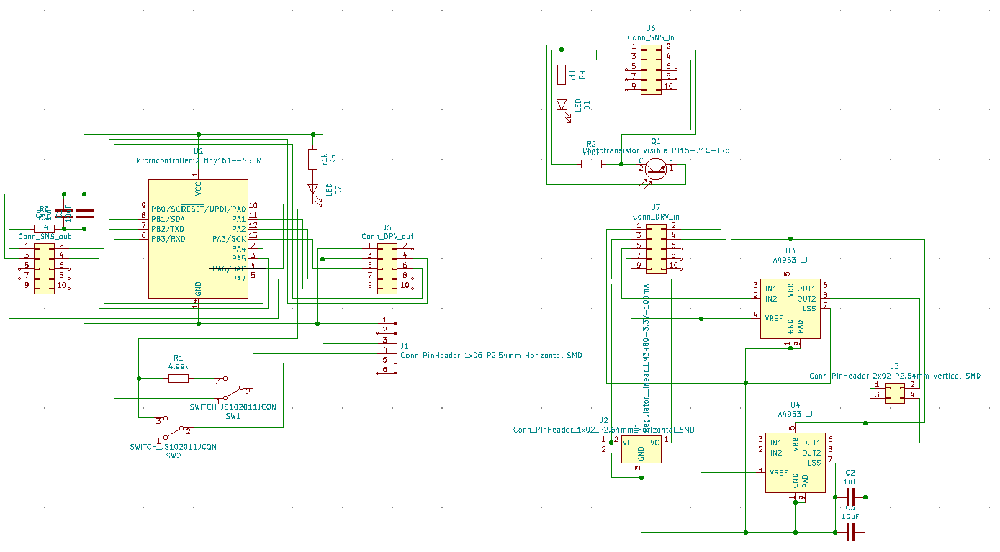
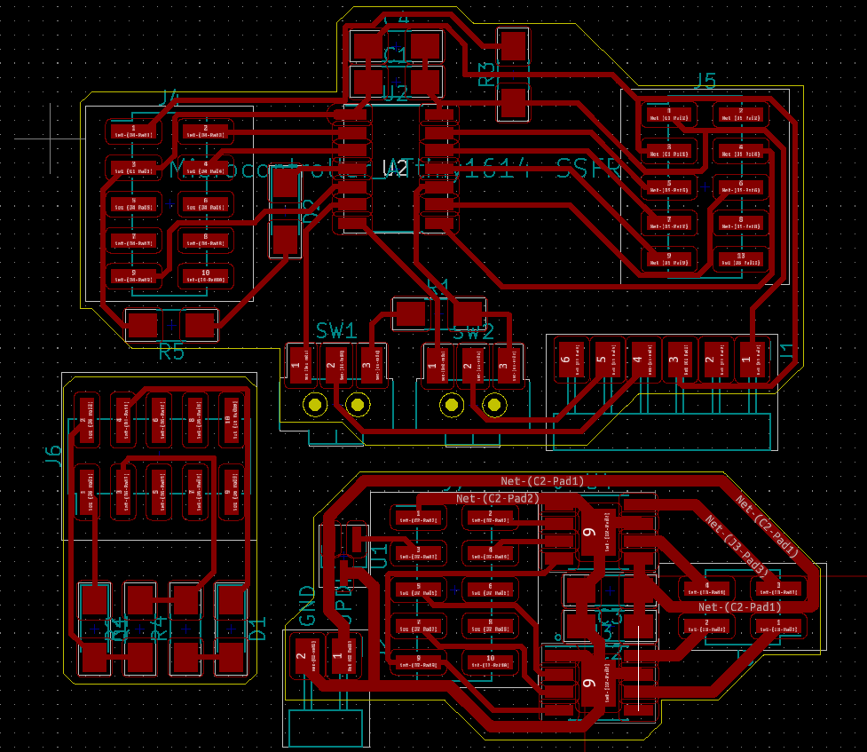
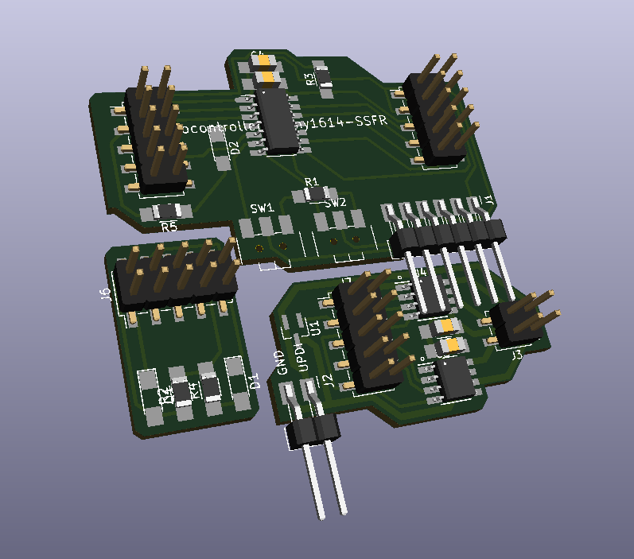
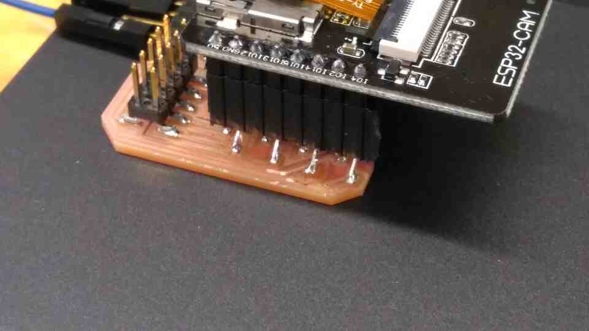
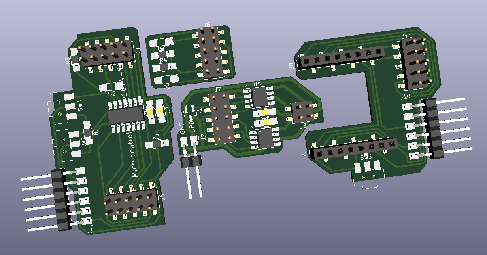
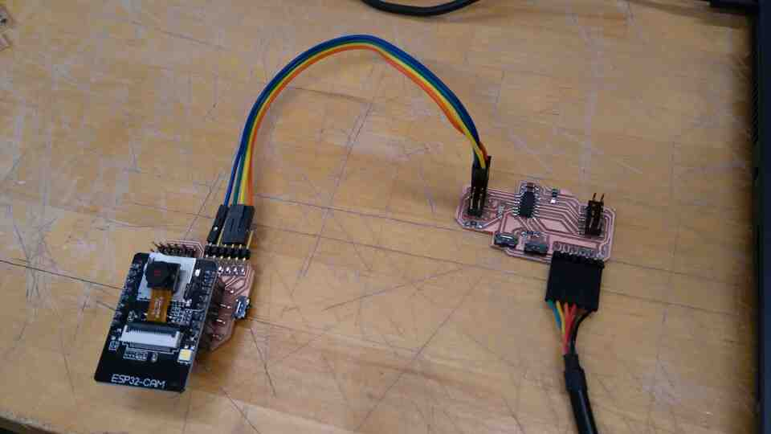
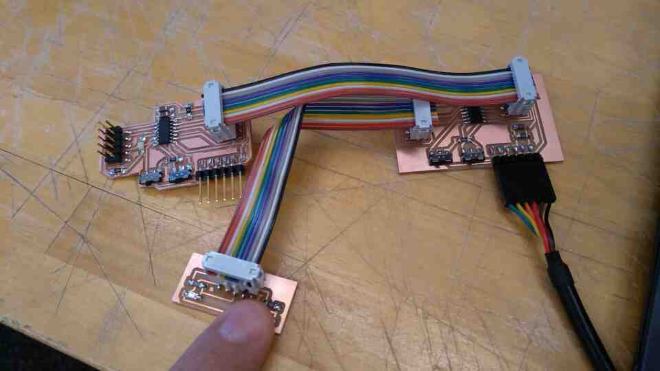

Building on last week I developed schematics and PCB designs for boards with 10 pin connectors. The core idea here is a rule that pins 1 and 3 are used for GND and VCC (respectively), and pins 8, 10 are left blank to prevent damage to boards in case of orientation mismatches. Remaining pins are connected to vacant pins of the microcontroller for flexibility.
We share the same 2x5 connector protocol with Kim, so that we can share modules when necessary, and debug using each other's boards.
This setup relies on a central board with a microcontroller, and two other boards for sensing and actuation. Another part of our protocol is that sensing boards connect from the left hand side, while actuation boards connect to the right hand side of the microcontroller board.



To understand practical wireless communication, I produced an ESP32-CAM board from Neil's design. Using example code, I was able to communicate video from ESP32-CAM to my PC via WI-FI, and communicate both ways between ESP32-CAM and my Android device via Bluetooth.
The 8 pin connections for this board, and my later derivation of it were easily damaged when placing / removing the ESP32-CAM. Future designs may benefit from a more robust connection method.

I modified Neil's design for ESP32-CAM breakout to include our 2x5 pin connector, so that I could communicate between ESP32-CAM and the ATTiny1614 in my main board. However, ESP32-CAM does not have a SoftwareSerial.h library in the Arduino IDE. There are alternative implementations on the web with workflows that differ from SoftwareSerial.h.

To conserve time and sanity, I connected TX and RX from the existing 6 pin serial connector, as well as VCC and GND to communicate between ESP32-CAM Bluetooth and ATTiny1614.

The current state is a semi-success. I can send messages from my phone to my ATTiny1614, through the ESP32-CAM and vice versa. However, ESP32-CAM receives constant nonsense signals from the ATTiny1614.
Using the same boards we made for our modular connection protocol, we were able to connect our microcontrollers with 2x5 connectors with Kim.
In this case Kim's board (right) receives sensor data from his sensor board (bottom left) which it then sends to my board (left). However the sensor data only works as an on-off swith on my board.

Using the softwareSerial.h library, we were able to use pins 9, 10 as TX and RX for a UART connection.
In the resulting example our microcontrollers send and receive messages from our computers through the 6 pin serial connection, while they communicate with each other via RX and TX channels we defined within the 2x5 pin connection.
Notes
In our example, we had to switch TX and RX on one of the boards.
When we try sending analog signals among boards via pins, the signal reads either 1023 or 0 despite the source board sending values in between.
"Serial.println()" function only works with SoftwareSerial when "mySerial.readstring()" methods is used as an argument.
2x5 vertical connectors provide flexibility as breakouts for jumper cables for tests and debugging purposes, even outside our protocol.
I plan to develop code, so we can send ESP32-CAM's signals (acquired from phone via Bluetooth) to different microcontrollers based on an address scheme.